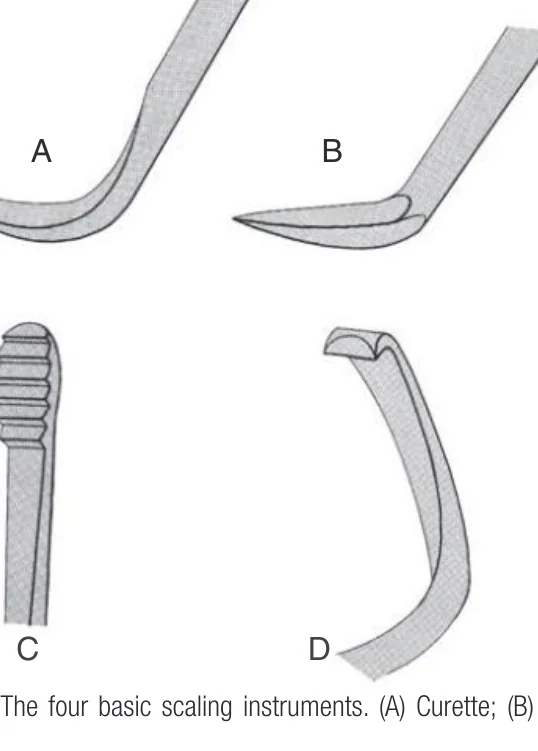
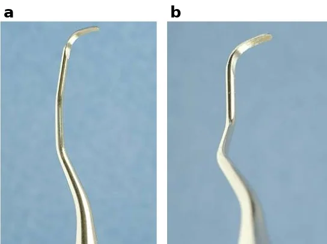

نسخه استخراجشده؛ ترجمه یا تأیید علمی انجام نشده است. وضعیت: captured
هر ابزار دستی سه بخش دارد و شناخت آنها، انتخاب درست ابزار را ممکن میکند:
| بخش | نقش |
|---|---|
| دسته (Handle) | محل گرفتن؛ قطر بزرگتر و بافتدار، خستگی دست را کم میکند |
| ساقه (Shank) | دسته را به تیغه وصل میکند؛ ساقه انتهایی بخشی است که به تیغه میرسد |
| سر کاری (Working End) | تیغه یا نوک که با دندان تماس دارد |
🔑 هرچه ساقه پیچیدهتر و خمدارتر باشد، دسترسی به نواحی خلفیتر بهتر است.
ساقه مستقیم ⬅️ دندانهای قدامی.
ساقه با یک خم ⬅️ پرهمولرها.
ساقه با خمهای متعدد ⬅️ مولرها.
ساقه بلندشده (After Five) ⬅️ پاکتهای عمیقتر از ۵ میلیمتر.
تیغه کوچکشده (Mini Five) ⬅️ نواحی باریک، فورکیشن، ریشههای تنگ.
⚠️ نکته عملی: هنگام انتخاب ابزار برای یک ناحیه، اول به ساقه نگاه کن نه به تیغه.
| ویژگی | اسکیلر داسی | کورت یونیورسال | کورت گریسی |
|---|---|---|---|
| تعداد لبه برنده | ۲ | ۲ | 🔴 ۱ (لبه پایینی و بیرونی) |
| نوک | تیز و نوکدار | گرد | گرد |
| پشت تیغه | تیز | گرد | گرد |
| سطح مقطع | مثلثی | نیمدایره | نیمدایره |
| زاویه تیغه با ساقه انتهایی | — | ۹۰ درجه | 🔴 ۷۰ درجه (آفست) |
| کاربرد | 🔴 فقط فوقلثهای | فوق و زیرلثهای | زیرلثهای، ناحیهاختصاصی |
⚠️ چرا اسکیلر داسی فقط فوقلثهای است؟ نوک تیز و پشت تیز آن، هنگام ورود به پاکت بافت نرم را میبُرد و زخم میکند. کورتها نوک و پشت گرد دارند و به همین دلیل بیخطر وارد پاکت میشوند.

🔑 مهمترین تمایز گریسی: فقط یک لبه برنده دارد — لبه پایینی و بیرونی که منحنیتر است. اگر با لبه اشتباه کار کنی، هیچ برشی رخ نمیدهد.
| شماره | ناحیه |
|---|---|
| ۱-۲ و ۳-۴ | دندانهای قدامی |
| ۵-۶ | قدامی و پرهمولر |
| ۷-۸ و ۹-۱۰ | سطوح باکالی و لینگوالی خلفی |
| ۱۱-۱۲ | سطوح مزیال خلفی |
| ۱۳-۱۴ | سطوح دیستال خلفی |
📌 برای به یاد سپردن دو مورد آخر: عدد کوچکتر (۱۱-۱۲) برای سطح مزیال که به قدامی نزدیکتر است، و عدد بزرگتر (۱۳-۱۴) برای سطح دیستال که دورتر است.

| ابزار | کاربرد |
|---|---|
| فایل | خرد کردن جرم بسیار سفت و حجیم پیش از کار با کورت |
| هو (Hoe) | برداشتن جرم حجیم؛ امروزه کاربرد محدود |
| چیزل | نواحی بیندندانی قدامی، با حرکت فشاری |
| پروب پریودنتال | سنجش عمق پاکت |
| سوند | 🔑 تشخیص جرم زیرلثهای و ارزیابی صافی سطح ریشه |
🔑 سوند، ابزار ارزیابی نقطه پایان کار است. بدون آن نمیتوانی بدانی جرمگیری کامل شده است یا نه — چشم به ناحیه زیرلثهای دسترسی ندارد و تنها حس لامسه راهنمای توست.
⚠️ اشتباه رایج ۱: اسکیلر داسی فقط فوقلثهای است.
⚠️ اشتباه رایج ۲: گریسی یک لبه برنده دارد و زاویه تیغهاش ۷۰ درجه است؛ یونیورسال دو لبه و ۹۰ درجه.
⚠️ اشتباه رایج ۳:۱۱-۱۲ مزیال و ۱۳-۱۴ دیستال خلفی.
نوع سؤال: ساخت کلمه · 5 خانه
حروف منبع: ل · ز · ی · م · ا